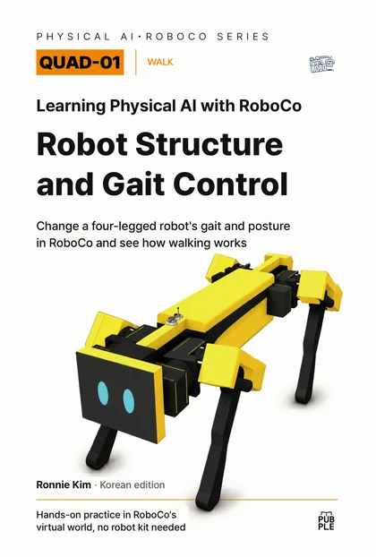

Web only · video first
Watch the walking
a printed page can't show
This page doesn't repeat the book. It shows the walking and poses that are still pictures in print as real motion, and collects web-only challenges. Each video lists only what to watch. Why it moves that way and how to change it continue in the matching chapter.
On YouTube 7 videos WALK · ACTION · LEG1 · LEG2 · LEG3 · ROLL_PITCH_YAW · BALANCE

WALK: the full walking run On YouTube
The WALK model running forward, back, turns in place, side steps, and the auto modes. It walks while a key is held and settles back on four feet when the key is released.
What to watch
- The moment two diagonal legs lift and land together
- How the body's heading differs between A/D turns in place and Q/E side steps
- The short settle after you let go, until all four feet are down
ACTION: all the performances On YouTube
Each performance on keys 1–9, one after another. The same twelve joints that walk can also greet, sit and wave, do push-ups, hold a handstand, and tap dance.
What to watch
- How body height changes from one performance to the next
- How many feet stay down to hold the body in each one
- How each performance returns to the standing pose (0)
LEG1: three joints, one at a time On YouTube
The robot on a viewing stand, moving one leg's three joints (HX, HY, KN) one key at a time. The robot's screen shows the input, motor angles, and Port numbers together.
What to watch
- Which way HX, HY, and KN each turn
- A left leg and a right leg looking mirrored on the same key
- How the Port number on screen pairs with the joint that moved
LEG2: inverse kinematics (IK) On YouTube
Moving a foot target in x·y·z with the keys while IK works out the three joint angles. In the circle test the foot follows a preset circle.
What to watch
- All three joints moving together when the target changes
- The IK angles and the angles sent to the servos being different numbers
- The path the foot traces in the circle test
LEG3: four legs working together On YouTube
Tests 1–9 for all four legs: reach checks, joint limits, lifting one leg at a time, diagonal pairs, a three-leg stance, and a walking sequence.
What to watch
- The other three legs holding the body while one lifts
- The order in which two diagonal legs move as a pair
- The robot skipping a command when a target is out of reach
ROLL_PITCH_YAW: body posture On YouTube
Feet stay planted while the body moves forward/back, left/right, and up/down, then tilts and turns in roll, pitch, and yaw. The side panel graphs the attitude angles.
What to watch
- Whether the feet stay put while the body moves
- How roll and pitch split leg lengths front/back and left/right
- The dot on the panel's graph tracking the actual tilt
BALANCE: IMU and PID balance On YouTube
A tilting test platform rocks while the robot reads its body tilt with an IMU and corrects with its legs through PID. The same platform motion runs with balance off, then on.
What to watch
- How far the body tilts with balance off versus on
- How quickly the body levels out after the platform stops
- What the console logs when KP, KI, and KD change
New videos
Practice videos added after publication.
Web-only challenges
Tasks to try after the book's final mission. No answers are given; the ideas and methods you need are in the chapters listed.
Challenge 1 · Auto mode 3 versus your own keys
Record the path auto mode 3 (complex pattern) takes on the floor grid, then walk the same path yourself with the keys.
- Rule
- Same start pose · 3 runs each
- Record
- Difference in end position and number of falls
- Background
- Continue in the book · CH03 · CH25
Challenge 2 · Performances that keep feet down
Run ACTION's nine performances one by one and tabulate how many feet stay on the floor throughout each.
- Rule
- Press the next key only after a move finishes
- Record
- Supporting feet per performance and the shakiest moment
- Background
- Continue in the book · CH02 · CH05
Challenge 3 · Draw a bigger circle
In LEG2's circle test, grow the radius step by step and find the largest value the foot can still trace all the way round.
- Rule
- Change only the radius each time
- Record
- The radius where the first
[WARN]appears, and where on the circle - Background
- Continue in the book · CH12 · CH14
Practice files (Digital Package)
Practice code v3.5.0
Download ZIP · 116 KBEight start files and Q01_Lib. Follow the README in the ZIP and the book's Getting Started chapter.
Seven Workshop models
Subscribe on Steam Workshop. Links and model–start file pairs are on the practice files page.
See the model guideVersion · errata
| Technical basis | Book_Q01_Robot release v3.5.0 (Python v3.4.9) · RoboCo Python API 0.3.1 |
|---|---|
| Videos recorded with | v3.4.x development builds; on-screen text may differ slightly from the release. |
| Verification | Game build and Live Mode run records |
| Errata | None so far. Confirmed corrections will be posted here with dates. |